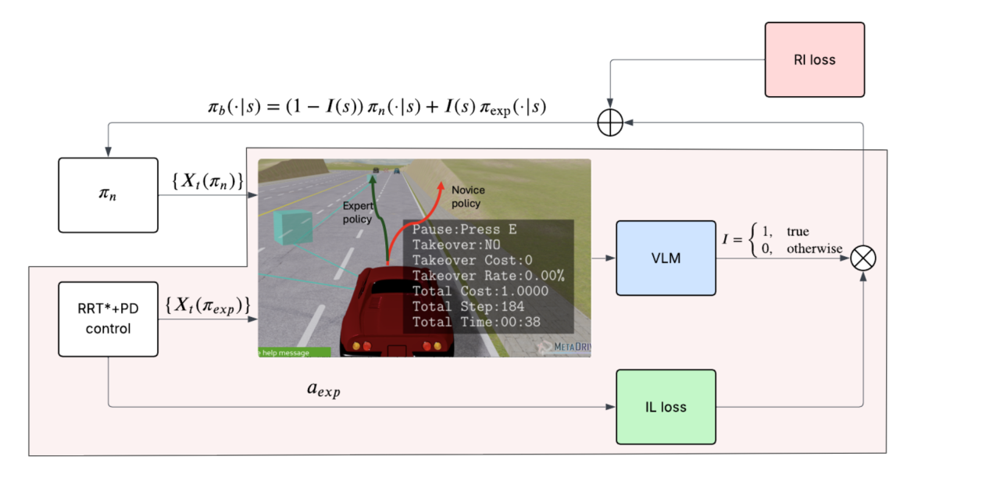
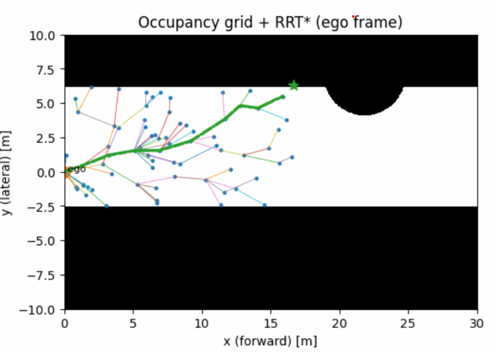
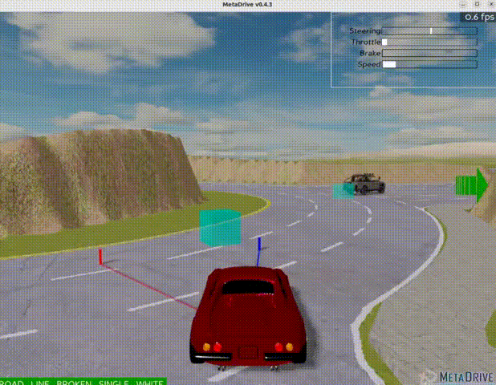
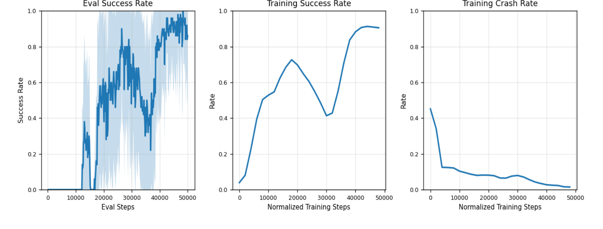

Deciding When to Trust the Expert: VLM-Augmented Policy Switching for Safe Driving (VLAPS)
Qizhao Chen, Debajyoti Chakrabarti
Overview
Online reinforcement learning can require unsafe exploration, while imitation learning depends on large expert datasets and may struggle under distribution shift. VLAPS replaces continuous human supervision with a vision-language model that compares the short-horizon behavior of a learned policy and an expert controller and decides which one should control the vehicle.
The expert combines RRT* local planning with PD tracking. The VLM decision is used not only for policy switching during training, but also as supervision for behavior cloning and TD-style value learning.

RRT* + PD Expert
The expert policy builds a LiDAR-derived ego-centric occupancy grid, plans a local collision-free path using RRT*, and tracks a lookahead waypoint using PD steering and speed control. RRT* + PD was used to replace the human action of the original human-in-the-loop framework, so that the whole system could run autonomously:
| RRT* + PD as expert | Human action as expert | |
|---|---|---|
| Observation | LiDAR obstacles, left/right distance to road edge | Human eye analyzes the image |
| Goal | Simulator global goal; RRT* local (intermediate) goal | Human determines where to navigate |
| Control action | PD controller tracking the local goal | Human uses keyboard to steer vehicle |
| Dynamic model | State information is required | Not needed |

Visual Policy Comparison
Both the learned and expert actions are rolled forward using a kinematic bicycle model. Their predicted trajectories are rendered into the current ego-view, and the VLM periodically compares them based on safety and progress toward the goal.

From Policy Switching to Learning
When the VLM prefers the expert trajectory, the expert action is treated as a local demonstration for behavior cloning. A critic is also trained from the VLM preference signal using TD-style learning, allowing these local comparisons to influence future policy behavior.
Evaluation in MetaDrive
The learned policy improved from near-zero success early in training to a high-success regime, while crashes decreased and reliance on the expert reduced over time. Evaluation was performed over 50 full episodes without intervention.
| Metric | Value |
|---|---|
| Success rate | 86% |
| Crash rate | 0% |
| Out-of-road rate | 8% |
| Route completion | 93.5% |


Practical Limitations
- VLM query latency limits how frequently policy decisions can be reevaluated
- Approximate trajectory visualization can introduce rendering and prediction error
- VLM decisions are sensitive to prompt design, model choice, and query frequency
- RRT* + PD was used instead of nonlinear MPC because the MPC expert was too slow and sometimes infeasible in this setup
Key Takeaway
VLAPS replaces continuous human supervision with a VLM-based policy gate that decides when an expert should take over and uses the same signal to improve the learned policy.
- Autonomous expert: RRT* + PD
- VLM-based policy comparison
- Behavior cloning from expert-preferred states
- TD-style value learning
- No human intervention during training
- 86% final success with zero crashes in the tested MetaDrive evaluation